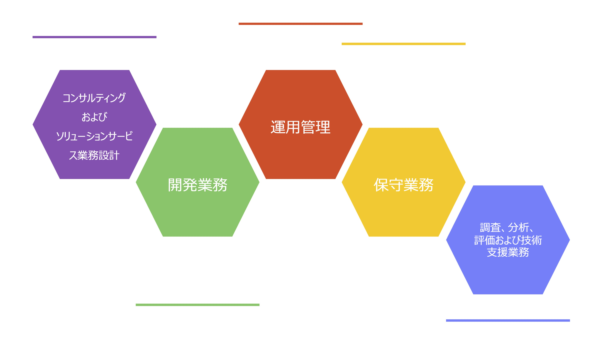

サービス
情報システム

「手に入れたい」「つくりたい」などの想いを確実にカタチにしたい、そんなお客様のビジネスの 実現をお手伝いするために、多面的な分析によりお客様のニーズを的確に把握、さらに最新技術を導入することにより、より満足度の高いサービスを、ご提案からアウトソーシングに至る まで一貫してご提供致します。

SES
(System Engineering Service)
SES事業は人材不足、短期的な増員に対応します。基本的にはお客様先に常駐し、設計・開発・テストなどの技術支援を行います。
幅広いパートナーネットワークの中から、支援先企業のプロジェクトに 必要なスキルをご提案します。複数人のチーム単位での常駐も可能です。
支援先企業のメリット
即戦力スタッフを必要な期間だけ調達できるため、 繁忙期の業務負担を軽減できます。また、社員教育等にかかるコストも抑えられます。
当社パートナーのメリット
常駐する期間が決まっているため、 閑散期の余剰労働力を有効に活用できます。個人の場合は、働き方を選べるメリット。